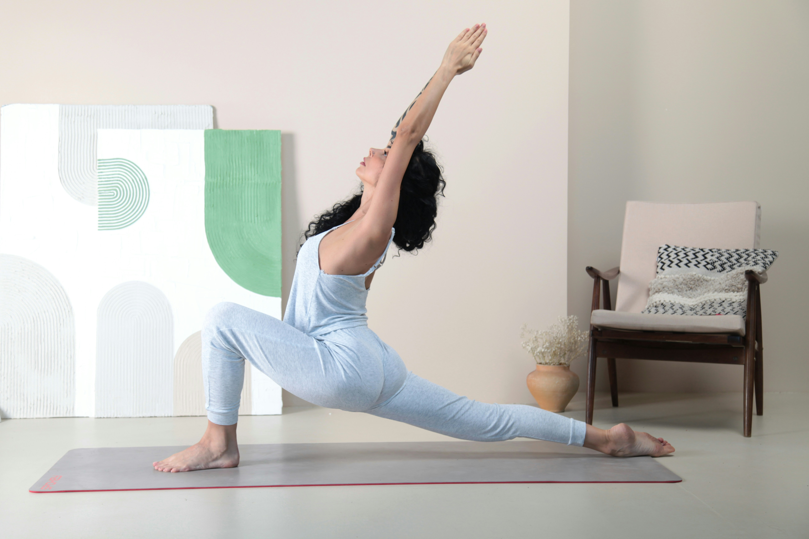

A modern approach to long-term wellness focused on preventive healthcare, balanced routines, stress management, nutrition, movement, and sustainable lifestyle habits for healthier living.
Wellness Support
Lifestyle Care
Preventive Focus

Wellness Insight
Core Essentials
Healthy eating supports energy and long-term wellness.
Mental wellness is essential for chronic care support.
Daily movement improves physical and emotional health.
“Chronic wellness is not about quick fixes — it’s about creating sustainable routines that support healthier living, emotional balance, and long-term vitality.”
Chronic wellness care focuses on prevention, early intervention, and healthy lifestyle management. Through proper sleep, stress reduction, physical activity, regular health monitoring, and mindful nutrition, individuals can improve overall wellbeing and reduce the risk of chronic health concerns.
Routine health assessments and wellness tracking help detect risks early and support healthier long-term outcomes.
Consistent routines, balanced nutrition, hydration, quality sleep, and regular movement support lifelong wellness and resilience.
Preventive Wellness Care
Chronic wellness care focuses on long-term health management through preventive strategies, balanced lifestyles, regular monitoring, and sustainable habits that improve overall quality of life.
Regular health screenings and preventive care help identify risks early and support better long-term health outcomes.
Healthy nutrition, quality sleep, hydration, stress management, and daily movement all contribute to improved chronic wellness.
Long-term lifestyle care reduces health complications, improves energy levels, and supports healthier aging.
Healthy Living Journey
Routine health checkups help track vital indicators, detect risks early, and maintain long-term wellness through timely intervention.
Balanced meals rich in nutrients support immunity, improve energy levels, and help reduce the risk of chronic health conditions.
Daily movement, mindful routines, proper rest, and stress management help maintain physical and emotional well-being.
“Chronic wellness is not achieved overnight — it is built through consistent habits, mindful choices, and long-term lifestyle care.”
Chronic wellness care focuses on maintaining long-term physical, emotional, and metabolic health through preventive healthcare practices and sustainable daily routines. Modern lifestyles, stress, sedentary habits, and poor nutrition have increased the need for proactive wellness management.
One of the key foundations of chronic wellness is preventive care. Routine health assessments and early intervention help individuals detect potential health concerns before they develop into more serious conditions.
Nutrition plays a major role in supporting overall wellness. Balanced diets rich in whole foods, vegetables, healthy fats, lean proteins, and hydration contribute to improved immunity, energy levels, and metabolic balance.
Physical activity is equally important in maintaining long-term wellness. Regular movement improves cardiovascular health, strengthens muscles, supports mental health, and enhances daily productivity and energy.
Lifestyle care also includes stress management, quality sleep, mindfulness, and emotional well-being. Together, these healthy habits help individuals maintain balance, reduce health risks, and improve overall quality of life for years to come.